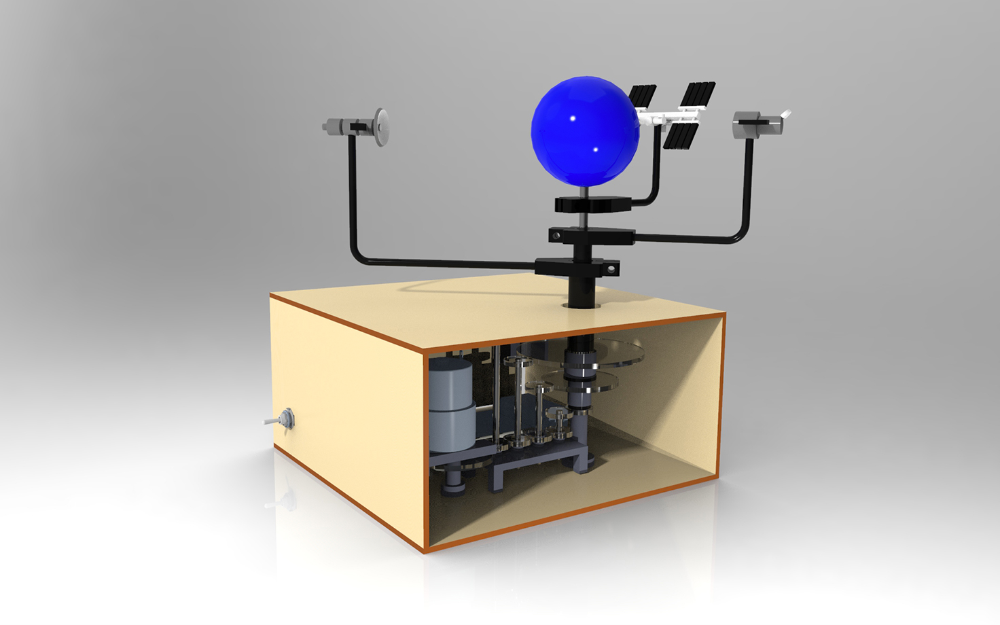
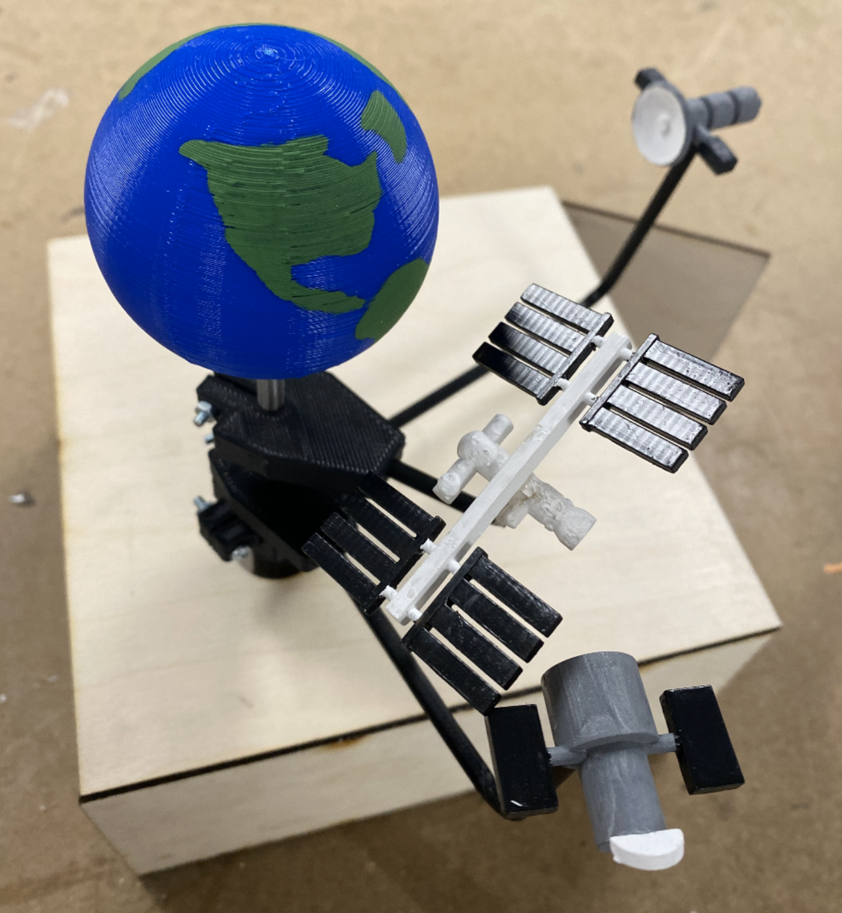

Earth's Satellites
FALL 2021 - As part of ME 444: Toy Design's final project, my team and I created an Earth's Satellites mechanical toy. I contributed to the satellites' CAD modeling, built the fully-constrained assembly, and created the mechanical analysis and animations for the project. We used Creo Parametric as our primary CAD program throughout the project.
The Project
Our team designed a mechanical Earth's Satellites educational toy for children at the elementary age. Satellites include the International Space Station in low Earth orbit, the Hubble Space Telescope in low Earth orbit, and a GPS satellite in medium Earth orbit, all of which revolve around the Earth at various speeds and directions in a visually stimulating display for children. Also visible through a clear acrylic sheet is the series of gears and gear trains that makes the device run, providing a second layer of intellectual stimulation for children through the movement and coupling of the mechanical gears.
CAD Design and Assembly
One of the first things I was tasked with was creating the CAD model for the International Space Station. Using NASA's interactive ISS 3D model as a reference, I modeled a simplified version the station while keeping in mind recommended minimum sizes for SLA 3D printing. Following rules of thumb provided in the course, the smallest rods were at least 2 mm in diameter, and thinnest panels were at least 3 mm in width.
More info to come!